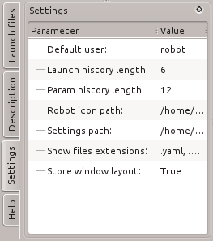

By default the settings and histtory files are stored in $(HOME)/.ros/node_manager folder. This can be also changed by ROS_LOG_DIR environment variable.

Settings parameter:
Autoupdate
By default node manager updates the current state on changes. You can deactivate this behavior to reduce the network load. If autoupdate is deactivated you must refresh the state manually. (Default: True)
Colorize hosts
Determine automatic a default color for each host if True. Manually setted color will be prefered. You can select the color by double-click on hostname in description panel. To remove a setted color delete it manually from $HOME/.ros/node_manager/settings.ini. (Default: True)
Confirm exit when closing
Shows on closing of node_manager a dialog to stop all ROS nodes if this option is set to true. (Default: True)
Default user
The username for access remote hosts. (Default: robot)
Launch history length
The count of displayed files in the root of Launch Dock. (Default: 6)
Max time difference
Shows a warning if the time difference to remote host is greater than this value. (Default: 0.5)
Param history length
The length of the history of values entered in any dialog window. (Default: 12)
Robot icon path
The default search path for an image with robot name. If an image file is found, it will be shown in Host Description Panel. (Default: $(find node_manager_fkie)/images)
Settings path
The path to store this settings and history files. The default path will not be removed but a redirection to new path is created in. (Default: $(HOME)/.ros/node_manager)
Show file extensions
While browsing in Launch Dock all folders which not contain a file with here defined extension is skipped. If you can't find your folder you can add your file extension to this parameter. (Default: .yaml, .conf, .cfg, .iface, .sync, .test)
Start sync with discovery
Sets 'start sync' in 'Start' master discovery dialog to True, if this option is set to true. (Default: True)
Store windows layout
Stores the position and size of Node Manager windows. (Default: True)